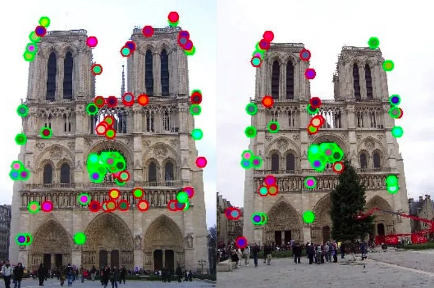
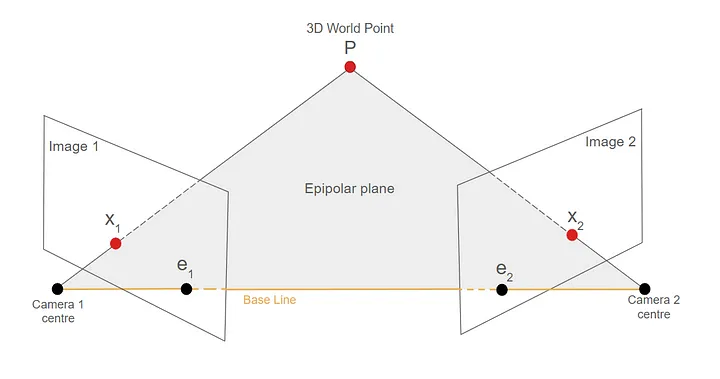
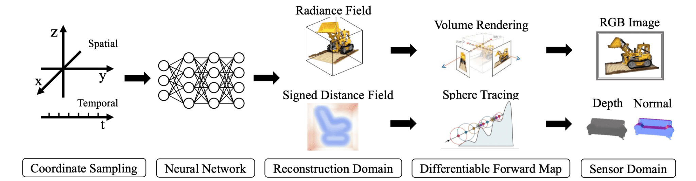
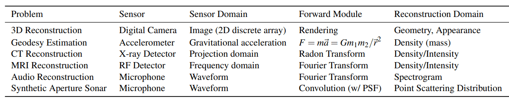
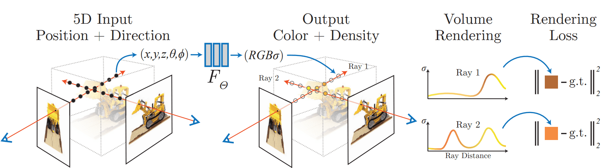
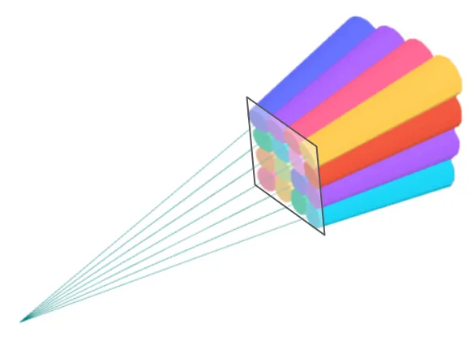
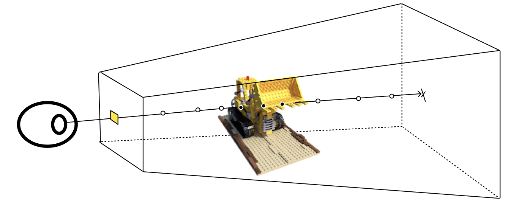
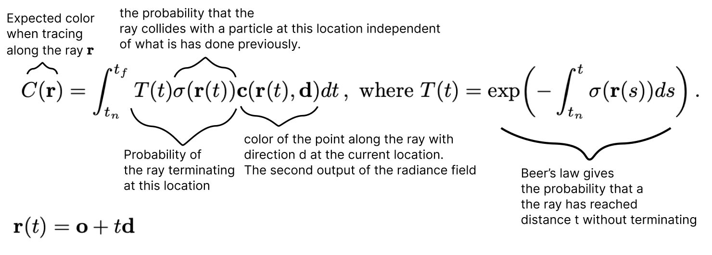

17 3D Reconstruction
17.1 Structure-from-Motion
Structure-from-Motion (SfM) recovers both 3D scene structure and camera poses from an unordered collection of 2D images of the same scene.
17.1.1 Pipeline
Step 1 — Feature Extraction: Detect and describe keypoints in each image. Classical: SIFT (scale and rotation invariant). Learned: SuperPoint (jointly trained detector-descriptor).
Step 2 — Feature Matching: Find correspondences \((\mathbf{x}_1^{(i)}, \mathbf{x}_2^{(i)})\) between image pairs corresponding to the same 3D point. Mutual nearest-neighbor matching with Lowe’s ratio test filters ambiguous matches. RANSAC with the 8-point algorithm and the fundamental matrix removes outliers.

Step 3 — Triangulation: Given matched pixels \(\mathbf{x}_1, \mathbf{x}_2\) in two views with known projection matrices \(\mathbf{P}_1, \mathbf{P}_2\), find the 3D point \(\mathbf{X}\) satisfying \(\lambda_1 \tilde{\mathbf{x}}_1 = \mathbf{P}_1 \tilde{\mathbf{X}}\) and \(\lambda_2 \tilde{\mathbf{x}}_2 = \mathbf{P}_2 \tilde{\mathbf{X}}\). Due to noise, the rays through \(\mathbf{x}_1\) and \(\mathbf{x}_2\) rarely intersect exactly; \(\mathbf{X}\) is found by least-squares (DLT method).

Step 4 — Bundle Adjustment: Jointly refine all camera poses and 3D points by minimizing reprojection error: \[\min_{\{\mathbf{R}_i, \mathbf{t}_i\}_{i=1}^M,\, \{\mathbf{X}_j\}_{j=1}^N} \sum_{(i,j)\in\mathcal{V}} \rho\!\left(\left\|\mathbf{x}_{ij} - \pi(\mathbf{K}_i, \mathbf{R}_i, \mathbf{t}_i, \mathbf{X}_j)\right\|^2\right)\]
where \(\pi\) is the perspective projection, \(\mathbf{x}_{ij}\) is the observed keypoint location of point \(j\) in image \(i\), \(\mathcal{V}\) is the set of visible point-view pairs, and \(\rho\) is a robust loss (Huber, Cauchy) to handle mismatches. Solved by Levenberg–Marquardt with sparse block structure exploitation (COLMAP is the standard open-source implementation).
Step 5 — Optional Meshing: Convert the point cloud to a surface mesh (Poisson surface reconstruction, Delaunay triangulation) and apply UV-mapped texture from the original images.
Interview Insight: Bundle adjustment is the bottleneck in large-scale SfM — it scales \(O(M^2 N)\) naively. Exploiting the sparse block structure of the Hessian (cameras and points couple only through observed matches) brings it to near-linear in practice. COLMAP uses this and is the de facto standard pipeline.
17.2 Neural Radiance Fields
17.2.1 Neural Fields
A neural field is a neural network \(\Phi_\theta : \mathcal{X} \to \mathcal{Y}\) that parameterizes a continuous field — a mapping from spatial (or spatiotemporal) coordinates to physical quantities. The key advantage over grid-based representations is that the resolution is decoupled from memory: a small MLP encodes an arbitrarily detailed continuous function.
The general training loop is: 1. Sample query coordinates from the scene. 2. Query \(\Phi_\theta\) to obtain field quantities. 3. Apply a differentiable forward mapping \(F\) from field quantities to sensor measurements (e.g. volume rendering for images). 4. Compute reconstruction loss between rendered and observed measurements. 5. Backpropagate through \(F\) and \(\Phi_\theta\).
Formally, with reconstruction-domain spaces \(\mathcal{X}, \mathcal{Y}\) (coordinates and field quantities) and sensor-domain spaces \(\mathcal{S}, \mathcal{T}\) (sensor inputs and measurements): \[\Phi: \mathcal{X} \to \mathcal{Y}, \qquad F: (\mathcal{X}\to\mathcal{Y}) \to (\mathcal{S}\to\mathcal{T}), \qquad \Omega: \mathcal{S}\to\mathcal{T}\] where \(\Omega\) is the (unknown) true sensor response and \(F(\Phi_\theta)\) is its differentiable approximation. Given training pairs \((x_{recon}, x_{sens}) \in (\mathcal{X}, \mathcal{S})\) with observed measurement \(t_{sens} = \Omega(x_{sens}) \in \mathcal{T}\), training solves: \[\boxed{\theta^\star = \underset{\theta}{\text{argmin}} \int_{(x_{recon},\,x_{sens})} \left\| F\bigl(\Phi_\theta(x_{recon})\bigr) - \Omega(x_{sens}) \right\|}\]

The same framework generalizes far beyond 3D reconstruction — only the sensor, forward module, and reconstruction domain change:

17.2.2 NeRF Architecture
Neural Radiance Fields (Mildenhall et al., 2020) instantiate the neural field framework for novel view synthesis.

- World domain: \((x, y, z, \theta, \phi) \in \mathbb{R}^3 \times S^2\) — spatial location plus viewing direction
- Field quantities: \((\mathbf{c}, \sigma) \in \mathbb{R}^3 \times \mathbb{R}_{\geq 0}\) — RGB color and volume density
- Architecture: An MLP \(F_\theta\) maps \((x, y, z)\) to \(\sigma\) and an intermediate feature; the feature is concatenated with the viewing direction and decoded to \(\mathbf{c}\). This factorization enforces that geometry (\(\sigma\)) is view-independent while appearance (\(\mathbf{c}\)) can be view-dependent.
Positional Encoding: MLPs struggle to represent high-frequency signals (spectral bias). NeRF lifts inputs to a higher-dimensional Fourier feature space: \[\gamma(p) = \left(\sin(2^0\pi p),\, \cos(2^0\pi p),\, \ldots,\, \sin(2^{L-1}\pi p),\, \cos(2^{L-1}\pi p)\right) \in \mathbb{R}^{2L}\] Applied independently to each coordinate. Typically \(L = 10\) for positions, \(L = 4\) for directions.
17.2.3 Volume Rendering


For camera ray \(\mathbf{r}(t) = \mathbf{o} + t\mathbf{d}\) with near/far planes \(t_n, t_f\), the expected color is: \[\hat{C}(\mathbf{r}) = \int_{t_n}^{t_f} T(t)\,\sigma(\mathbf{r}(t))\,\mathbf{c}(\mathbf{r}(t), \mathbf{d})\,dt, \qquad T(t) = \exp\!\left(-\int_{t_n}^{t}\sigma(\mathbf{r}(s))\,ds\right)\]

\(T(t)\) is the transmittance — the probability that the ray travels from \(t_n\) to \(t\) without being absorbed. With \(N\) stratified samples at depths \(\{t_i\}\) and intervals \(\delta_i = t_{i+1} - t_i\): \[\boxed{\hat{C}(\mathbf{r}) = \sum_{i=1}^N T_i\,(1 - e^{-\sigma_i \delta_i})\,\mathbf{c}_i, \qquad T_i = \exp\!\left(-\sum_{j=1}^{i-1}\sigma_j\delta_j\right)}\]
Training: photometric L2 loss over a batch of rays \(\mathcal{R}\) sampled from training images: \[\mathcal{L} = \sum_{\mathbf{r} \in \mathcal{R}} \left\|\hat{C}(\mathbf{r}) - C(\mathbf{r})\right\|_2^2\]
NeRF uses hierarchical sampling: a coarse network proposes sample weights; a fine network concentrates samples in high-density regions.
Limitations: Training a single scene takes hours. Rendering one frame requires evaluating the MLP at \(H \times W \times N\) points. Not directly editable; does not generalize across scenes.
17.2.4 Instant-NGP: Multiresolution Hash Encoding
Instant Neural Graphics Primitives (Müller et al., 2022) replaces the deep positional-encoding MLP with a shallow MLP over multiresolution hash-encoded features, reducing training from hours to seconds.
Given a 3D point \(\mathbf{x}\), the encoding uses \(L\) resolution levels. At level \(l\) with resolution \(N_l = \lfloor N_{\min} \cdot b^l \rfloor\) (geometric progression with base \(b = (N_{\max}/N_{\min})^{1/(L-1)}\)):
- Find voxel: locate the grid cell containing \(\mathbf{x}\) at resolution \(N_l\).
- Hash corners: map each of the 8 voxel corners \(\mathbf{v}\) to a table index: \[h(\mathbf{v}) = \left(\bigoplus_{i=1}^3 v_i \cdot \pi_i\right) \bmod T\] where \(\pi_i\) are large prime constants and \(T\) is the hash table size.
- Look up features: retrieve a learned \(F\)-dimensional feature vector at each corner.
- Trilinear interpolation: blend the 8 corner features by \(\mathbf{x}\)’s position within the cell.
Concatenate interpolated features across all \(L\) levels → pass to a small MLP (2 hidden layers). The network learns to resolve hash collisions implicitly. The learnable parameters are the hash table entries, not the MLP weights.
Interview Insight: “Why is hashing better than a dense grid?” A dense grid at resolution \(512^3\) needs 128M entries; the hash table has at most \(T \approx 2^{19}\) entries per level. Collisions are sparse in practice because nearby fine-level cells rarely collide at coarser levels.
17.3 Interview Questions
Q: What is bundle adjustment and why is it necessary in SfM?
Bundle adjustment jointly refines all camera poses and 3D points by minimizing reprojection error. Triangulation and incremental camera registration accumulate errors; BA corrects these globally using non-linear least squares (Levenberg–Marquardt). It is tractable because the Jacobian is sparse: each 3D point only couples to the cameras that observe it, giving a block-sparse structure that allows efficient factorization (Schur complement trick).
Q: Why does NeRF need positional encoding?
MLPs exhibit spectral bias: they preferentially fit low-frequency functions. A scene contains high-frequency textures, sharp edges, and fine geometric detail. Mapping input coordinates through sinusoidal features at multiple frequencies (\(\gamma(p) = (\sin 2^k\pi p, \cos 2^k\pi p)_{k=0}^{L-1}\)) allows the network to represent these high-frequency signals without requiring very deep networks.
Q: What is the aperture problem in optical flow, and how do NeRF and 3DGS sidestep it?
The optical flow constraint \(I_x u + I_y v + I_t = 0\) gives one equation per pixel for two unknowns. Only the gradient-parallel component of motion is recoverable locally. NeRF and 3DGS bypass the aperture problem entirely: rather than estimating per-pixel motion between frames, they learn a full 3D scene representation from posed RGB images using volume rendering as the forward model.